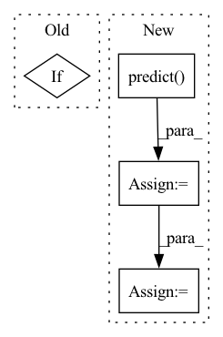

Pattern ID :39043

Before Change
forecast = m.predict(future)
fig1 = m.plot(forecast, plotting_backend="plotly")
if PLOT:
fig1.show()
After Change
m.highlight_nth_step_ahead_of_each_forecast(m.n_forecasts)
future = m.make_future_dataframe(df, periods=30, n_historic_predictions=100)
forecast = m.predict(future)
fig3 = m.plot(forecast, plotting_backend="plotly")
fig4 = m.plot_components(forecast, plotting_backend="plotly")
if PLOT:
In pattern: SUPERPATTERN
Frequency: 3
Non-data size: 4
Instances
Fragment ID: 111193472
Project Name: ourownstory/neural_prophet
Commit Name: f7e09e428690cd39ffd71c90c57a66f7b1c2b648
Time: 2022-10-18
Author: 76744817+LeonieFreisinger@users.noreply.github.com
File Name: tests/test_plotting.py
M Class Name: AnonimousClass
N Class Name: AnonimousClass
M Method Name: test_plotly_uncertainty(0)
N Method Name: test_plotly_uncertainty(0)
M Parent Class:
N Parent Class:
M File Name: tests/test_plotting.py
N File Name: tests/test_plotting.py
M Start Line: 376
M End Line: 377
N Start Line: 368
N End Line: 392
'>
Before Change
// Save extracted embeddings
filename = f"{evaluation_dir}{weights}_embeddings/bbbc021_embeddings"
if concat and norm:
filename += f" ({weights}, concat, norm)"
elif concat:
filename += f" ({weights}, concat)"
After Change
yield get_image(x[1])
ds_test = tf.data.Dataset.from_generator(test_generator, output_types=(tf.float32)).prefetch(buffer_size=tf.data.experimental.AUTOTUNE)
accum_activations = model.predict(ds_test, batch_size=1, use_multiprocessing=True, workers=32)
if concat: // concatenate 3 consecutive 1028-dim feature vectors for 1 image
proc_activations = []
for i in range(3, len(accum_activations)+1, 3):
proc_activations.append(accum_activations[i-3:i].flatten())
activations = pd.DataFrame(proc_activations)
else:
activations = pd.DataFrame(accum_activations)
// Save extracted embeddings
weights_str = check_weights_str(weights)
'>
Fragment ID: 111193457
Project Name: stan-hua/cytoimagenet
Commit Name: 58d66c4cc6eed607192ce85534d29f8f8ca9fee4
Time: 2021-08-23
Author: stanley.hua@mail.utoronto.ca
File Name: scripts/model_evaluation.py
M Class Name: AnonimousClass
N Class Name: AnonimousClass
M Method Name: extract_embeddings(4)
N Method Name: extract_embeddings(3)
M Parent Class:
N Parent Class:
M File Name: scripts/model_evaluation.py
N File Name: scripts/model_evaluation.py
M Start Line: 155
M End Line: 169
N Start Line: 129
N End Line: 176
'>
Before Change
metric = metric_cls()
calculated_metrics[metric.name] = metric.calculate(y_true, y_pred)
if criterion:
total_loss = total_loss / total
return (calculated_metrics, y_true, y_pred, y_pred_probs, total_loss)
After Change
inputs = inputs.to(self.device)
labels = labels.to(self.device)
outputs = self.predict(inputs)
// check if outputs is OrderedDict for segmentation
if isinstance(outputs, collections.Mapping):
outputs = outputs["out"]
if criterion:
batch_loss = criterion(outputs, labels)
total_loss += batch_loss.item()*inputs.size(0)
predicted_probs, predicted = self.get_predicted(outputs)
'>
Fragment ID: 111193451
Project Name: biasvariancelabs/aitlas
Commit Name: 30b9944f7086274457283b8aeedc50d88e000e54
Time: 2020-10-29
Author: ivica.dimitrovski@gmail.com
File Name: aitlas/base/models.py
M Class Name: BaseModel
N Class Name: BaseModel
M Method Name: evaluate_model(4)
N Method Name: evaluate_model(4)
M Parent Class: nn.Module,Configurable
N Parent Class: nn.Module,Configurable
M File Name: aitlas/base/models.py
N File Name: aitlas/base/models.py
M Start Line: 179
M End Line: 217
N Start Line: 176
N End Line: 225